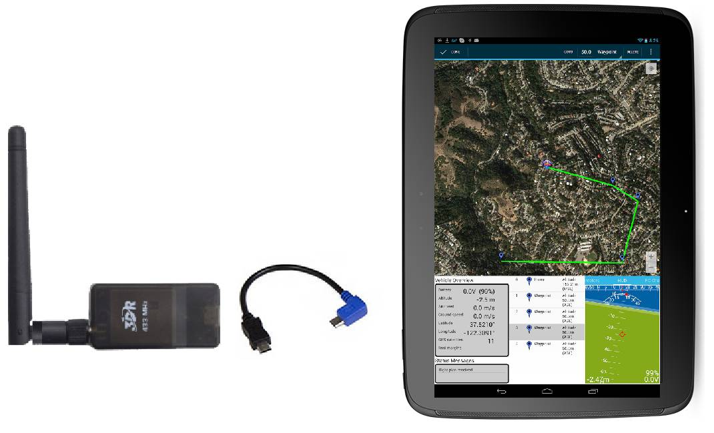
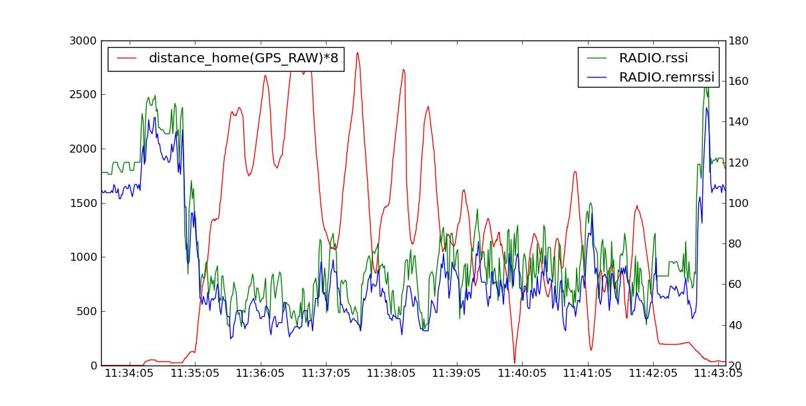

[copywiki destination=”plane,copter,rover,blimp”]¶
SiK Telemetry Radio¶
A SiK Telemetry Radio is one of the easiest ways to setup a telemetry connection between your Autopilot and a ground station. This article provides a basic user guide for how to connect and configure your radio.
{kind=link}
3DR Radio v2 (a consumer implementation of SiKRadio)¶
Note
This page was previously named 3DR Radio (version 2) for 3DRobotics’ trusted high quality implementation of SiK radio. As this radio is no longer available from 3DR, the page has been renamed to reflect the underlying open source radio platform.
Overview¶
A SiK Telemetry Radio is a small, light and inexpensive open source radio platform that typically allows ranges of better than 300m “out of the box” (the range can be extended to several kilometres with the use of a patch antenna on the ground). The radio uses open source firmware which has been specially designed to work well with MAVLink packets and to be integrated with the Mission Planner, Copter, Rover and Plane.
The radios can be either 915Mhz or 433Mhz and you should purchase the model which is appropriate for your country/region.
As the platform is open source, implementation can be purchased from many different sources, including ArduPilot Partners:
Search EBay for SiK Telemetry Radio (be aware, many “clones” have incorrect analog modules and will interoperate fine with themselves, although with reduced range, but not with the original “3DR” design. OEM versions below do not have this issue)
mRo SiK Telemetry Radio (mRobotics)
Holybro SiK Telemetry Radio (Holybro)
Tip
If you’re looking for an alternative, the RFD900 Radio Modem is highly recommended by many community members (The SiK platform was based on the RFD900 and both platforms have continued to evolve). It provides a significantly better range.
Features¶
The main features of the SiK Radio are listed below (see the Advanced Configuration for more information):
Very small size
Light weight (under 4 grams without antenna)
Available in 900MHz or 433MHz (v2 only) variants
Receiver sensitivity to -121 dBm
Transmit power up to 20dBm (100mW)
Transparent serial link
Air data rates up to 250kbps
MAVLink protocol framing and status reporting
Frequency hopping spread spectrum (FHSS)
Adaptive time division multiplexing (TDM)
Support for LBT and AFA
Configurable duty cycle
Built-in error correcting code (can correct up to 25% data bit errors)
Demonstrated range of several kilometres with a small omni antenna
Can be used with a bi-directional amplifier for even more range
Open source firmware
AT commands for radio configuration
RT commands for remote radio configuration
Adaptive flow control when used with APM
Based on HM-TRP radio modules, with Si1000 8051 micro-controller and Si4432 radio module
Status LEDs¶
The radios have 2 status LEDs, one red and one green. The meaning of the different LED states is:
Green LED blinking - searching for another radio
Green LED solid - link is established with another radio
Red LED flashing - transmitting data
Red LED solid - in firmware update mode
Connecting the radios¶
The radio has interchangeable air and ground modules, meaning that you use them as a pair but it does not matter which one goes on the vehicle and which remains on the ground.
The radio has a micro-USB port, and a DF13 six-position port. The following sections explain how to connect these to autopilots and ground stations.
{kind=link}
Connecting to Pixhawk¶
Use the 6 pin DF13 connector that should have come with the radio to connect the radio to your Pixhawk’s “Telem 1” (“Telem 2” or “Serial 4/5” can also be used but the default recommendation is “Telem1”).

Connecting to a PC¶
Connecting the radio to your Windows PC is as simple as connecting the micro USB cable (which should have been included with the radio) to your PC. The necessary drivers should be installed automatically and the radio will appear as a new “USB Serial Port” in the Windows Device Manager under Ports (COM & LPT). The Mission Planner’s COM Port selection drop-down should also contain the same new COM port.

To connect the radios:
Select the new COM port, set the baud rate drop down (which appears between the COM port and Connect buttons) to 57600.
Press the Connect button and if the two radios connect successfully you should be able to lean your vehicle left and right and see its attitude update on the MP’s Flight Data screen’s artificial horizon.
Connecting to an Android tablet¶
Connecting the radio to an Android tablet using the L shaped micro USB cable (which should have been included with the radio). Then follow the directions in your preferred Ground Station app.
{kind=link}
Configuring using the Mission Planner¶
Many users will not need to configure their radios! One case where you might do so is when you use your vehicle with others — in which case you will need to specify different radio channels (Net ID).
Mission Planner supports configuring your radios using a simple GUI interface. For more information see Configuring a Telemetry Radio using Mission Planner.
Updating the Firmware¶
You can check the firmware version (latest version is here ) using the GUI tool mentioned in the previous section and update if necessary with these instructions
Expected range¶
Typical range achieved with the radios using standard configuration and antenna is around 500m, but the range varies a lot depending on noise sources and antenna setup.
Diagnosing range issues¶
The first thing you should do when diagnosing range issues is the “one meter test”. Setup the two radios one meter apart and look at the local and remote RSSI. You should get a value of over 190 for a standard SiK radio. If you don’t then your antennas may be faulty or your radios may have been damaged. If you have ever run the radios without an antenna attached them the radio may have been damaged.
If that test passes then have a look at your local and remote RSSI and noise from a flight. See the advanced setup page for detailed information on diagnosing range issues using telemetry logs.
Improving the range¶
The range can be improved by:
Using an inexpensive 900Mhz yagi antenna on the ground like these perhaps mounted on an Antenna Tracker
Replace at least one of the two radios with a higher powered RFD900
Reduce the
AirRateparameter which will increase range but at the expense of the rate of the data transfer.
The graph below shows the ground and remote receiver strength vs distance from home (in meters) for a test flight of a 3DR Radio (SiK implementation) on a SkyFun plane. The ground based radio was attached to a 3.5dB flat patch antenna. The SkyFun had a small ‘wire’ antenna. The graph shows the vehicle reached a distance of nearly 3km and the link was completely maintained throughout the flight.
{kind=link}
Although anecdotal, another user provided a Tlog showing a good link kept while the vehicle was 4.5km from the base station, using default radio settings for a 3DR 900 radio. The plane used a small omni antenna, and a 8dB patch antenna on the ground station.
Support for different countries/regions¶
It is very important that you configure your radios to comply with your regional/country regulations for frequency, hopping channels and power levels. For information on radio -> region frequency ranges and settings, see
3DR Radio Discussion Forum¶
The best place to get involved with the development or tuning of these radios is the SiK Radios forum. Join in on the forum to help make these radios even better!